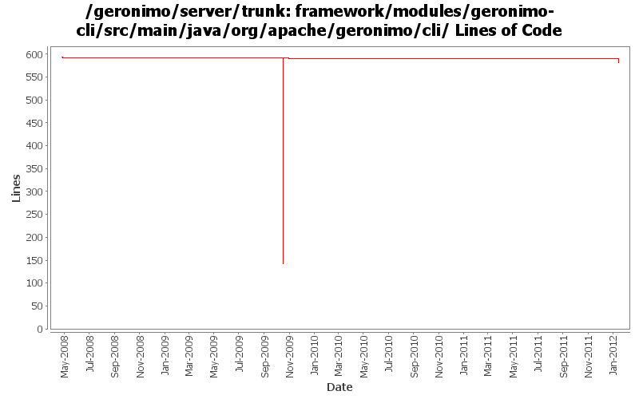

[root]/framework/modules/geronimo-cli/src/main/java/org/apache/geronimo/cli
 client
(0 files, 0 lines)
client
(0 files, 0 lines)
 daemon
(1 files, 135 lines)
daemon
(1 files, 135 lines)
 deployer
(20 files, 1434 lines)
deployer
(20 files, 1434 lines)
 shutdown
(1 files, 121 lines)
shutdown
(1 files, 121 lines)

| Author | Changes | Lines of Code | Lines per Change |
|---|---|---|---|
| Totals | 15 (100.0%) | 481 (100.0%) | 32.0 |
| djencks | 5 (33.3%) | 448 (93.1%) | 89.6 |
| xuhaihong | 1 (6.7%) | 15 (3.1%) | 15.0 |
| jdillon | 3 (20.0%) | 9 (1.9%) | 3.0 |
| gawor | 4 (26.7%) | 9 (1.9%) | 2.2 |
| dwoods | 2 (13.3%) | 0 (0.0%) | 0.0 |
GERONIMO-6240 remove/clean up some unused startup code
0 lines of code changed in 1 file:
GERONIMO-6058 Replace StringBuffer usage with StringBuilder
15 lines of code changed in 1 file:
GERONIMO-5527: Improved server -clean option handling
2 lines of code changed in 1 file:
1) register geronimo-managed mbean server as osgi service, 2) enable osgi jmx bundle to expose rfc139 mbeans, 3) add/update the shutdown command to use rfc139 mbean to stop the container, 4) update the debug properties for jdb to use geronimo defaults
0 lines of code changed in 2 files:
add bin/geronimo and bin/client that work just like before. bin/karaf will only start the karaf framework
7 lines of code changed in 1 file:
GERONIMO-4916 step 2 move sandbox osgi framework into trunk
448 lines of code changed in 2 files:
GERONIMO-4916 step 1 remove old framwork
0 lines of code changed in 2 files:
GERONIMO-4533 Fix 'This is ridiculous' error messages for thrown IllegalArgumentExceptions.
0 lines of code changed in 2 files:
Drop XLevel, as of Log4j 1.2.12 there is a Level.TRACE
Re-enabled support for org.apache.geronimo.log.ConsoleLogLevel
9 lines of code changed in 1 file:
(GERONIMO-3985) Use SLF4J as the primary logging facade for Geronimo
0 lines of code changed in 2 files: